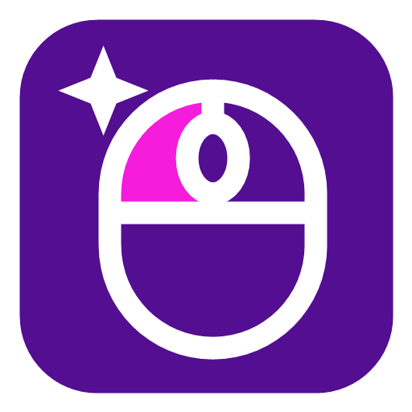
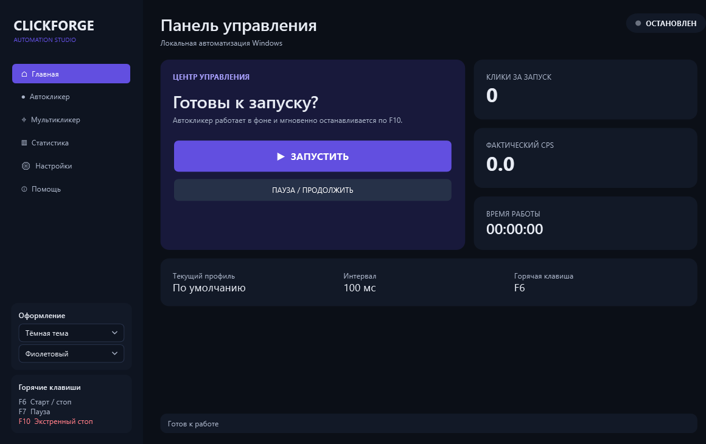

ClickForge
Для кликов в фиксированных координатах и последовательностей из нескольких точек. Есть статистика, темы и встроенная справка.
Скачать полную версию
ClickForgeWindows 10 и 11 · x64
ClickForge повторяет клики мыши с заданным интервалом. Запускайте его клавишей или боковой кнопкой мыши, кликайте в текущей позиции курсора или задайте последовательность точек.
Скачать ClickForge
Для кликов в фиксированных координатах и последовательностей из нескольких точек. Есть статистика, темы и встроенная справка.
Скачать полную версиюКомпактное окно для повторяющихся кликов в текущей позиции курсора. Можно задать интервал, число кликов и горячую кнопку.
Скачать LiteОбе версии бесплатны. Интерфейс на русском и английском. Последний релиз на GitHub
Назначить боковую кнопку мыши и выбрать одно или два нажатия можно в настройках горячих клавиш. Для аварийной остановки нажмите F10 в полной версии или F11 в Lite.